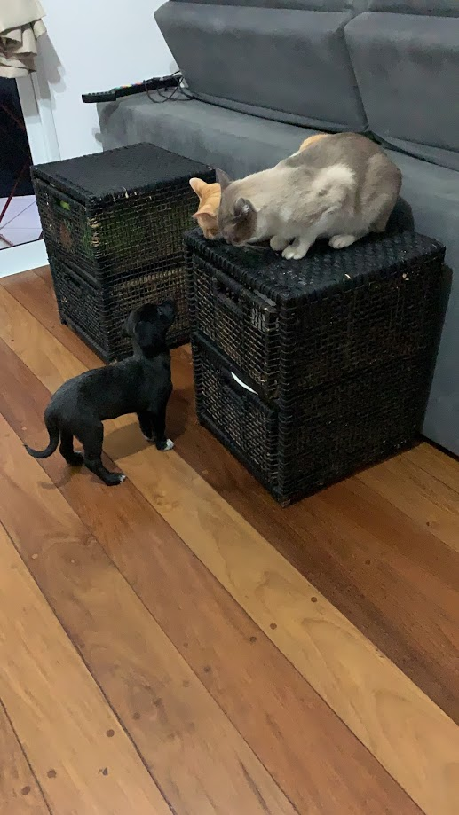

Quem são eles?
Esse projeto foi desenvolvido para contar a história dos meus animais de estimação. Aqui, você vai saber mais detalhes sobre como eles chegaram até mim e mudaram a minha vida.
Chester Cheddar
Também conhecido como Cheche, Chechitos, Chechinho ou Chechezinho, sua história começou assim:
Era maio de 2019. Eu estava em casa, em Campinas, e meu marido estava viajando a trabalho, quando recebo uma mensagem dizendo "ei, você quer um gatinho?". Era minha cunhada, dizendo que um filhotinho foi atirado, por cima do portão da casa de sua avó, no quintal.

Eu não pensei duas vezes. Aceitei ao mesmo tempo que mandava mensagem para o meu marido dizendo "ei, agora temos um gato". E desde então, Cheche tornou as nossas vidas uma alegria sem fim.
O nome Chester é em homenagem ao meu grande herói, Chester Bennington, e Cheddar por causa de Brooklyn 99. A ideia do nome foi da tia Gabi.
Cheche passava grande parte do dia em sozinho em casa, já que eu e Daniel trabalhávamos fora. Ele era o dengo da família e dos amigos, um gato super social, brincalhão e arteiro. Mal sabia ele que, em abril de 2020, sua vida iria dar uma leve mudada...
Laranjo Juba
Eu sempre quis ter um gato laranja, desde criança. Já tive gato de todas as cores, mas Laranja ainda não.
Abril de 2020. Olhando as mensagens no grupo do condomínio, vejo que uma amiga mandou a foto de um gatinho laranja, para adoção. Ele havia sido atropelado e estava sob os cuidados da moça que o encontrou, mas que não poderia ficar com ele pois ela já tinha muitos animais em casa.
Mais uma vez, eu não pensei duas vezes. Mandei mensagem dizendo que eu queria -- depois eu dava um jeito de convencer o Daniel. Mas convencer? Bom, ele e o Cheche eram extremamente apegados um ao outro e ele tinha um certo receio de não conseguir amar outro bichinho da mesma forma que ama o Cheche.
Na hora eu já sabia que nome ele teria: Laranjo. E como o Cheche tinha nome duplo, encubi ao Daniel a missão de escolher o segundo nome dele, e assim surgiu o Laranjo Juba.
Dia 15 de abril o Laranjito chegou. Mirradinho e meio ressabiado, como podem ver. Cabia quase na palma da mão.
Nos primeiros dois dias, ele e Cheche não tiveram contato, apenas através de cheiros. Depois foi a vez de se verem através de um vidro.
Cheche ficava meio "que negócio é esse aqui??" mas, para a nossa felicidade, não houve nenhum atrito entre os dois.
Em poucos dias, a cena representada na foto abaixo era algo muito comum de acontecer.
No fim, adotar o Laranjo foi uma das melhores decisões que eu já fiz na vida. Ele e o Cheche tornaram-se INSEPARÁVEIS. Onde um está, pode ter certeza que o outro está também. Eles brincam juntos, comem juntos, fazem as necessidades juntos (cada um em sua caixa) e dormem juntos. São os irmãos perfeitos.
E sobre o Daniel, não preciso falar nada, né? Acho que a imagem abaixo representa muito bem a relação dos dois.
Vocês devem estar pensando "bom, dois gatos, acho que agora ela para, né"
Hehehe. Eu sempre tive cachorro, a vida toda. Depois que saí da casa dos meus pais e passei a morar em apartamento, eu ficava com dó de ter um doguinho em um espaço tão pequeno, ainda mais passando tanto tempo fora de casa. Aí chegou a pandemia, voltamos a morar em Campinas em um lugar mais espaçoso e eu pensei comigo "agora é hora".
Carmelita Consuela
Aqui tivemos que trabalhar com mais um pouco de convencimento e com a ajuda da família do Dan para convencê-lo de que um cachorro é necessário em toda família feliz. Gatos são ótimos? SIM! Ainda mais os nossos. Mas um cachorro... Ahhh os cachorros... Quem é cachorreiro vai entender o que quero dizer aqui.
Depois de, sorrateiramente, implantar a ideia na cabeça dele, mostrando fotos de cachorros para adoção, um belo dia ele chega em mim com o celular e diz "escolhe". Setembro de 2020. Era a página de uma ONG aqui de Campinas que estava com doguinhos filhotes para adoção. Eu quase chorei de alegria. Já fui deslizando pela página loucamente e na minha cabeça eu pensava "QUERO TODOS".
Fui olhando, olhando, e resolvi mandar mensagem para a ONG através do formulário que eles pedem. Lá no site eu demonstrei interesse em uma filhotinha que chamava Rogéria. Logo menos tive uma resposta. A Rogéria já havia sido adotada, então eles me mandaram mais fotos de algumas doguinhas filhotes "porte pequeno" que estavam para adoção. E lá estava ela. Na época, era chamada de Maybe, e essa foto foi amor a primeira vista.
Virei pra ONG e falei "é ela!". Ela estava em um lar temporário em São Paulo, e poucos dias depois a trouxeram até nós. O nome foi escolhido por mim, Carmelita em homenagem a minha avó, mãe do meu pai, que nunca conheci, e Consuela por causa da Phoebe.
A interação dela com os gatos foi muito parecida com a do Laranjo com o Cheche, no começo. Cheiro, vidro, contato supervisionado etc.
Levou cerca de 2 a 3 dias para que eles interagissem sem intervenção humana. Um sucesso, eu acho.
Hoje em dia, a Carmelita e o Cheche adoram brincar juntos. O Laranjo é mais assustado: ele até fica no mesmo lugar que ela, mas se ela entrar um pouquinho no espaço dele, ele sai fora. Ele é muito sensível e ela é muito doidinha, então tem que ser no tempo dele.
E porte pequeno? Aham... Carmelita não fez um ano ainda e já está com mais de 12 kg. Só parece ser esbelta. E ela é fonte ilimitada de energia, também.
Essa cena é muito comum de se ver atualmente. Espero que vocês tenham curtido a história dos meus bichinhos. E lembrem-se: adotar é um ato de amor. <3